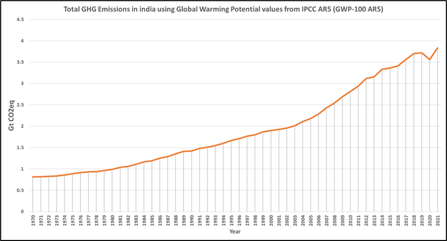

Carbon emission is a major challenge for all developed and developing countries in the world. As per report from Niti Aayog (November 2022), India is the 3rd largest emitter of CO2 in the world after China and the USA. Data from IPCC suggests total greenhouse gas emission was estimated to be around 3.8 Gt CO2eq. on 2021 and can be seen increasing year on year (Figure-1).
As per 2021 Indian CO2 emissions is more than 1.8 metric tons per capita (Figure-2) and increasing year on year though there is a minor dip in 2020 which was majorly contributed due to COVID.
Intergovernmental Panel on Climate Change (IPCC) categorised GHG emissions data into below major categories, Power Industry - Power and heat generation plants (public & auto producers) Other industrial combustion - Combustion for industrial manufacturing and fuel production Buildings – Small scale non-industrial stationary combustion Transport – Mobile combustion (road & rail & ship & aviation) Other sectors – Industrial process emissions & agriculture & waste Sector wise GHG emissions for India indicates (Figure 3) Transport industry rank first followed by power industry for combined GHG emissions. Hence if we can focus on these two key sectors to reduce the emissions more than 50%, we can meet our carbon reduction target much faster.
Electricity and heat production sector is emitting almost double CO2 than other sectors i.e Manufacturing sectors. These two sectors needed to be seriously think about the CCUS adpation at faster rate to miniminsing their CO2 emission into atmosphere. If we consider energy sectors and the CO2 emissions by Fuel types, then Coal and Liquid fuels lead the race globally with approximately 15 billion metric tons of CO2 emission in 2021 (Figure 5).
Niti Ayog report 2022 (Figure 7) also suggests thermal power generation is the main CO2 emiiters in India compared to other key carbon emiiters industries. As per the ministry of Coal (India ) website, Coal is the major fossil fuel and contributes 55% of the energy need. Because of ndia’s energy dependency on coal, coal cusmption has a share of almost 65% for electrity industry and in future its growing only. This also suggests Coal generated electrity sectors can be the ideal sectors to adpot CCUS projects at faster rate to reduce emissions.
Steel, cement and Oil & Gas Sectors together emits almost same amount of CO2 comparing with Thermal power generation alone. If India focus on these four key sectors (more focus on Thermal power generation plants) to implement CCUS then the target for climate change can be achieved.
There are several metrics implemented to calculate CO2 emissions. As per EPA (United states Environmental protection agency), GWP (Global Warming Potential) is a measure of the heat absorbed over a given time period due to emissions of a gas while GTP (Global Temperature Potential) is a measure of the temperature change at the end of that time period (again, relative to CO2). Intergovernmental Panel on Climate Change (IPCC) regularly published the Assessment Reports (Second Assessment Report (AR2)/Sixth Assessment Report (AR6) on CO2 emissions which were analysed and critical information were extracted from it.
Yearwise CO2 emission data was extracted from GHG platform India and analysed for each measurement type for different assesment reports (AR-2/AR-6 and GWP/GTP) and were analysed (https://www.ghgplatform-india.org/) as below (Figure 8, Figure 9, Figure 10, Figure 11, Figure 12 ). Assessment reports mainly divided CO2 emissions from four key sources, like Industrial process, energy processes, Agricultural, Forest and other land use and waste related emissions. Energy related emissions are way higher than other process related emissions and increasing yearwise.
Study reveals in each assesment report (AR2/AR6) for each metrics (GTP/GWP) waste and Agricultural related CO2 emissions are remaining constant yearwise, where as industrial related emissions are increasing year by year but most increase can be seen by energy related emissions. Comaprative trend of yearwise emissions for India by different metrics can be observed as below (Figure 13).
A state-wise carbon emission analysis using data from the GHG Platform India was conducted to identify the most polluting states in the country. The analysis resulted maps showing carbon emissions for the years 2005 (Figure 14), 2010 (Figure 15), 2015 (Figure 16), and 2018 (Figure 17). The maps reveal that the western states of India consistently emerge as the highest CO2 emitters, in stark contrast to the northeastern region, which has significantly lower emissions.
As analysed above Top 5 CO2 emitted states are as listed below in Table-1 & Table-2
References :
1. GHG Platform India (2022). Available at: Click Here
2. EDGAR - the emissions database for global atmospheric research. Europa.eu. Available at: Click Here
3. EDGAR - the emissions database for global atmospheric research. Europa.eu. Available at: Click Here
4. Government of India, NITI Aayog, (2022) Carbon Capture, Utilization and Storage (CCUS), Policy Framework and its Deployment Mechanism in India. [online] Available at:Click Here
5. IPCC, (2018) SPECIAL REPORT: Global Warming of 1.5oC. [online] Available at: Click Here